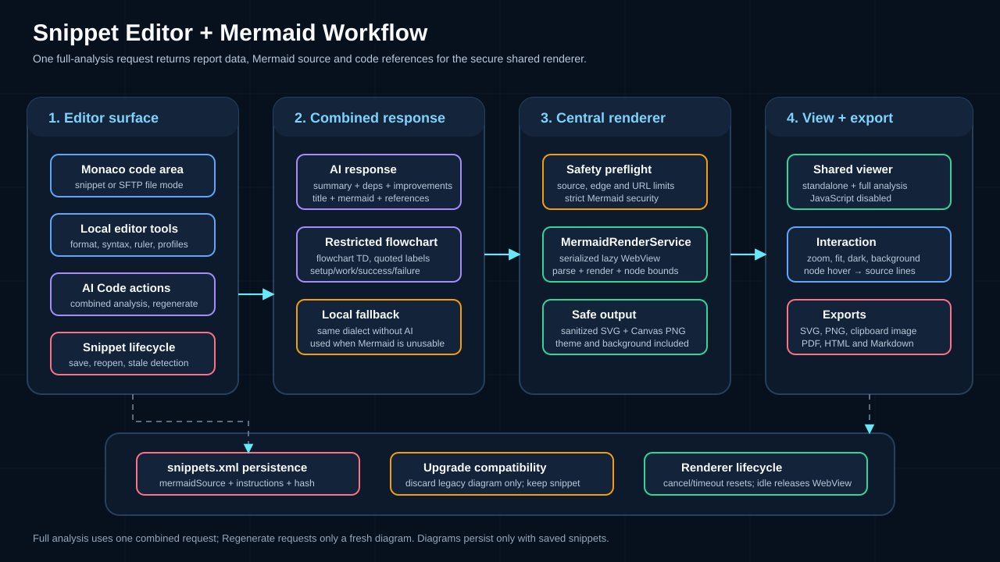

Snippet-Manager¶
Mit dem Snippet Manager können Sie wiederverwendbare Codefragmente, Skripte und Konfigurationsvorlagen speichern, organisieren und schnell einfügen. Verwalten Sie Snippets in mehreren Sprachen mit Syntaxhervorhebung, erweiterter Suche, KI-gestützter Bearbeitung, Platzhaltervariablen und flexiblen Exportoptionen.
Übersicht¶
Der Snippet Manager umfasst die folgenden Funktionen:
- System (OS)-Spalte – Eine sortierbare Betriebssystemspalte für jedes Snippet (Beliebig, Linux, macOS, Windows). Wird automatisch festgelegt, wenn ein Snippet über Workflow-Skript generieren erstellt wird.
- Sortierbare Spalten – Alle Spalten (Name, Sprache, Kategorie, System, Tags) sind sortierbar.
- Skript-Header-Kategorie – Eine feste, nicht löschbare Kategorie, die wiederverwendbare Header-Vorlagen für die Workflow-Skript-Generierung enthält.
Öffnen des Snippet-Managers¶
- Menü: Extras → Snippet-Manager
- Verknüpfung: ++Strg+Umschalt+s++ (++cmd+Umschalt+s++ unter macOS)
Snippets erstellen und bearbeiten¶
- Klicken Sie auf Hinzufügen (oder Bearbeiten, um ein vorhandenes Snippet zu ändern).
- Füllen Sie die Felder aus:
- Name – Ein beschreibender Name.
- Sprache – Wählen Sie die Programmiersprache aus (Bash, Python, Java, JavaScript, SQL, XML, JSON, YAML und mehr). Aktiviert die Syntaxhervorhebung.
- Kategorie – Wählen Sie eine vorhandene Kategorie aus oder geben Sie eine neue ein. Die feste, nicht löschbare Kategorie Script-Header enthält wiederverwendbare Header-Vorlagen für generierte Workflow-Skripte.
- System – Wählen Sie optional ein Zielbetriebssystem (Beliebig, Linux, macOS, Windows). Automatische Einstellung bei Erstellung über Workflow-Skript generieren basierend auf dem geprüften Betriebssystem des Agenten; Sie können es für jedes Snippet manuell überschreiben.
- Tags – Durch Kommas getrennte Schlüsselwörter für die Suche (z. B.
docker, deploy, backup). - Beschreibung – Optionale Freitextbeschreibung des Snippets.
- Inhalt – Der Snippet-Code. Der Editor bietet Live-Syntaxhervorhebung basierend auf der ausgewählten Sprache.
- Klicken Sie auf OK. Wenn sich der Snippet-Inhalt geändert hat, speichert KorTTY das bearbeitete Snippet und schließt gleichzeitig den Dialog. Beim Bearbeiten eines vorhandenen Eintrags speichert Als neues Snippet speichern den aktuellen Inhalt als neues Snippet mit einer neuen ID und lässt das Original unverändert.
Editor-Symbolleiste und Funktionen¶
Die Symbolleiste des Snippet-Editors bietet:
- Formatcode – Formatieren Sie den Inhalt mit lokalen Formatierern oder KI-gestützter Formatierung.
- Syntax prüfen – Validieren Sie die Syntax (lokal oder KI-unterstützt).
- KI-Text – Korrigieren Sie die Rechtschreibung, übersetzen Sie oder erstellen Sie technische Beschreibungen.
- KI-Code – Vervollständigen Sie den Code, überprüfen Sie Fehler, verbessern Sie die Auswahl, überprüfen Sie die Sicherheit oder erstellen Sie Diagramme.
- Einzeiler – Export als Terminal-Einzeiler.
- Editor-Zoom – Passen Sie die Textgröße mit ++Strg+Plus++ and ++Strg+Minus++ an.
- Editor-Profile – Wechseln Sie zwischen integrierten, von IntelliJ inspirierten Profilen und benutzerdefinierten Farbschemata.
- Hintergrundhelligkeit – Editor-Hintergrund anpassen.
- Zeilenumbruch – Zeilenumbruch ein-/ausschalten.
- Zeilennummern – Anzeige der Zeilennummern umschalten.
Wenn der Editor über den SFTP-Manager für eine lokale oder Remote-Datei geöffnet wird, bleibt dieselbe Symbolleiste verfügbar und das Dialogfeld verwendet Schaltflächen zum Speichern im Dateimodus.
Spaltenlineal und Formatierung der Zeilenbreite¶
Oberhalb des Inhaltsfelds hält das Spaltenlineal die aktuelle Caret-Spalte links als Column N fest und zeigt eine Live-Markierung an der entsprechenden Editorposition an. Wenn Sie mit der Maus über den Live-Marker fahren, wird Position N angezeigt. Klicken Sie auf das Lineal, um eine Markierung für die maximale Zeilenlänge festzulegen (Spalten 20–240). Klicken Sie mit der rechten Maustaste auf diese Markierung, um den Inhalt auf die ausgewählte Breite zu formatieren oder die Markierung zu entfernen.
Die Formatierung der Zeilenbreite funktioniert lokal nur für Formatierer, die konfigurierbare Breite unterstützen:
- Schöner unterstützte Webformate (JavaScript, TypeScript, HTML, CSS, JSON)
- Python (Schwarz)
- Perl (Perl::Tidy)
Bei Sprachen ohne lokale Zeilenbreitenunterstützung fragt KorTTY, ob eine KI-gestützte Formatierung verwendet werden soll. Sowohl die lokale als auch die KI-gestützte Formatierung zeigen eine Vorher/Nachher-Vorschau an, bevor Änderungen übernommen werden.
Formatcode¶
Format Code nutzt den gemeinsam genutzten lokalen Formatierungsdienst von KorTTY:
- Eingebaute Formatierer: JSON, XML, YAML/YML, TOML, INI/properties, Groovy
- Gebündelte Formatierer: Java (google-java-format), Bash/Shell (shfmt), Web/JS/TS/HTML/CSS (Prettier), SQL (sql-formatter), Perl (Perl::Tidy)
- Fallback: Optionale PATH-Fallbacks für Entwickler-Setups, wenn ein gebündelter Formatierer fehlt
Wenn die lokale Formatierung nicht verfügbar ist und das konfigurierte AI-Profil Snippet-AI-Funktionen bietet, fragt KorTTY, ob die AI-Unterstützung verwendet werden soll. Die AI-Formatierung wird erst angewendet, nachdem die Vorher/Nachher-Vorschau akzeptiert wurde.
Editor-Profile¶
Wechseln Sie zwischen:
- Aktuelle benutzerdefinierte Farben – Benutzerdefinierte Palette
- 10 integrierte, von IntelliJ inspirierte Profile – Vordefinierte Farbschemata
- Vom Benutzer erstellte Profile – Von Ihnen erstellte benutzerdefinierte Profile
Profile speichern Vordergrund-/Hintergrundfarben, Syntaxfarben, Cursorfarbe und Cursorstil.

KI-gestützte Editorfunktionen¶
Wenn AI konfiguriert ist, bietet der Snippet-Editor zusätzliche Aktionen:
KI-Vorschläge¶
- KI-Vorschlag – Erzeugt einen Dateinamen, eine Beschreibung und eine passende Sprache aus dem aktuellen Codeinhalt.
- Korrekte Schreibweise – Im Beschreibungsfeld; sendet nur Beschreibungstext an die KI.
AI-Textmenü¶
- Rechtschreibung in der Auswahl korrigieren – Tippfehler im ausgewählten Text korrigieren.
- Auswahl übersetzen… – Ausgewählten Text in eine andere Sprache übersetzen.
- Technische Beschreibung – Dokumentation für den ausgewählten Code oder das gesamte Snippet erstellen.
Optionale zusätzliche Anweisungen¶
Wenn die Option in Einstellungen → KI aktiviert ist, zeigt der Editor ein Feld mit gemeinsamen Anweisungen an, das bei Anfragen zur Rechtschreibkorrektur, Übersetzung und technischen Beschreibung gesendet wird.
Letzte AI-Änderung umschalten¶
Die Schaltfläche ↺ wechselt zwischen dem Originalcode und der letzten KI-generierten Editoränderung.
AI-Code-Vervollständigungen¶
- AI Complete – Fordert die Vervollständigung des Codes an der aktuellen Cursorposition an und zeigt ihn als nicht editierbaren Ghost-Vorschlag an. Klicken Sie zum Einfügen.
- Auto AI Complete – Fordert automatisch Abschlüsse an, nachdem Sie an einer Cursorposition angehalten haben. Standardmäßig deaktiviert; Nur für die aktuelle Editor-Sitzung aktiv.
Editor-Kontextmenü AI-Aktionen¶
- AI Assistant… – Öffnet einen Anweisungsdialog für die aktuelle Cursorposition. KorTTY sendet das vollständige Snippet, den Cursor-Offset, die Zeile, die Spalte und Ihre Anweisung an das konfigurierte AI-Profil. Das Ergebnis wird als Vorher/Nachher-Vorschau angezeigt.
- Fehler und Verbesserungen überprüfen – Erstellt einen Informationsbericht, ohne den Inhalt zu ändern.
- Verbessern… – Schreibt nur den ausgewählten Codebereich neu.
- Sicherheitsprüfung – Erstellt einen Sicherheitsbericht. Wählen Sie die zu behebenden Ergebnisse aus; KorTTY wendet sie mit einer Vorher/Nachher-Vorschau an.
- Diagramm – Erzeugt und speichert ein persistentes PlantUML-Logikstrukturdiagramm für das Snippet.
Warnung
Snippet-KI-Aktionen senden den aktuellen Snippet-Inhalt, Auswahl- oder Cursor-Metadaten, Eingabeaufforderungsanweisungen und optional aktivierte KI-Fähigkeiten an das konfigurierte Standard-KI-Profil. Snippet-KI-Aktionen aktivieren keine Internet-Tools, selbst wenn das ausgewählte Profil über Internetzugang verfügt. Die automatische Vervollständigung kann das Snippet wiederholt senden, während sie aktiv ist. Deaktivieren Sie sie daher für sensible Snippets, es sei denn, Sie vertrauen dem konfigurierten Endpunkt.
Textkorrektur und Übersetzung¶
Für die auswahlbasierte Textkorrektur und -übersetzung schreibt KorTTY nur bearbeitbaren Kommentartext, Zeichenfolgenliterale und für den Benutzer sichtbare Textsegmente neu. Die logische Codestruktur wird nicht neu geschrieben.
Technische Beschreibungen¶
- Wenn Text ausgewählt ist, beschreibt die KI nur diesen Bereich.
- Wenn nichts ausgewählt ist, beschreibt die KI das gesamte Snippet.
Mit dem Beschreibungsdialog können Sie:
- Kopieren Sie die generierte Beschreibung
- Formatieren Sie es mit der Kommentarsyntax der aktuellen Snippet-Sprache
- Fügen Sie es in das Snippet oberhalb des ausgewählten Codes oder oben ein
Alternative Lösungen¶
Klicken Sie mit der rechten Maustaste auf eine ausgewählte Coderegion und wählen Sie Alternative Lösung, um:
- Fordern Sie mehrere alternative Implementierungen an (bis zum konfigurierten Limit)
- Fügen Sie ein dreizeiliges Feld für zusätzliche Anweisungen hinzu
- Laden Sie neue Alternativen neu und regenerieren Sie sie
- Zoomen Sie eine einzelne Vorschau auf den gesamten Dialogbereich
- Wenden Sie genau den ursprünglich ausgewählten Code an, wenn Sie fertig sind
PlantUML-Diagramme¶
PlantUML-Diagramme werden mit dem Snippet gespeichert. Wenn sich der Snippet-Inhalt nach der Diagrammgenerierung ändert, markiert KorTTY das Diagramm als möglicherweise veraltet und bietet eine Neugenerierung an.
- Rendering: Nur lokal – KorTTY verwendet ein prüfsummenverifiziertes PlantUML-JAR und Graphviz
dot; Es wird kein Remote-Server verwendet. - Dialogfunktionen: Gerendertes Bild, Skalierung ohne Verzerrung, Zoom/Anpassung, SVG/PNG-Export und Kopieren in die Zwischenablage.
- Abhängigkeitsfehler: Wenn lokales Rendering nicht verfügbar ist, zeigt KorTTY den Fehler an, damit Java/Graphviz behoben werden kann.
Platzhaltervariablen¶
Snippets können Platzhaltervariablen enthalten, die ersetzt werden, wenn Sie das Snippet einfügen.
Eingebaute Variablen¶
Diese Variablen werden automatisch ersetzt:
| Variable | Ersatz |
|---|---|
${date} |
Aktuelles Datum im YYYY-MM-DD-Format |
${time} |
Aktuelle Uhrzeit im HH:MM:SS-Format |
${datetime} |
Aktuelles Datum und Uhrzeit im YYYY-MM-DD HH:MM:SS-Format |
${hostname} |
Hostname des lokalen Computers |
${username} |
Aktueller Systembenutzername |
${clipboard} |
Aktueller Inhalt der Zwischenablage |
${cursor} |
Cursorposition (aus dem Text entfernt; Position zurückgegeben) |
Benutzerdefinierte Variablen¶
Jeder ${variableName}, der nicht in der integrierten Liste enthalten ist, wird als benutzerdefinierte Variable behandelt. Wenn Sie das Snippet einfügen:
- KorTTY überprüft den Variablenmanager auf gespeicherte Werte
- Variablen ohne gespeicherte Werte fordern zur Eingabe auf
Snippets an das Terminal senden¶
Der Snippet Manager kann ein ausgewähltes Snippet direkt an das aktive Terminal senden.
An Terminal senden¶
- Behält bestehendes Verhalten bei
- Unterstützte Skriptsprachen werden nach Möglichkeit als Terminal-Einzeiler eingebettet – Andere Snippets verwenden den vorhandenen Fallback-Pfad
Mit Parametern an Terminal senden¶
– Öffnet einen Dialog für fehlende ${...}-Platzhaltervariablen und Skriptargumente
- Skriptargumente werden einzeln pro Zeile eingegeben; Leerzeilen werden ignoriert
- Wenn Sie ohne Skriptargumente bestätigen, ist das Ergebnis dasselbe wie bei An Terminal senden, fehlende Platzhaltervariablen können jedoch weiterhin ausgefüllt werden
Skriptargumente¶
Unterstützt für Bash/Shell-, Python-, Perl- und Ruby-Snippets:
- Argumente werden einzeln und in Shell-Anführungszeichen übergeben – Nicht als roher Shell-Text angehängt
- Wenn Argumente für nicht unterstützte Sprachen eingegeben werden, zeigt KorTTY eine Informationsmeldung an und sendet nichts
Terminalanzeige¶
Bei eingebetteten/Base64-Einzeilern zeigt das Terminal die Bezeichnung KorTTY snippet: ... an, anstatt den vollständig generierten Befehl wiederzugeben.
Importieren und Exportieren¶
Snippets können in mehreren Formaten importiert und exportiert werden.
Datenformatexporte¶
Verwenden Sie Exportieren, um ausgewählte Snippets oder alle Snippets zu speichern, wenn nichts ausgewählt ist. Verwenden Sie Importieren, um Snippets aus einer Datei zusammenzuführen.
| Formatieren | Erweiterung | Anwendungsfall |
|---|---|---|
| JSON | .json |
Datenaustausch, programmatischer Zugriff |
| XML | .xml |
Strukturierte Daten, Tool-Integration |
| YAML | .yaml |
Für Menschen lesbar, konfigurationsfreundlich |
Skriptorientierte Exporte¶
Wählen Sie für skriptspezifische Exporte Folgendes:
Nur-Text-Skriptdateien¶
– Öffnet eine Zielordnerauswahl
- Schreibt eine Datei pro Snippet
– Der Dateiname stammt aus der Spalte Name des Snippets, einschließlich der Erweiterung
- Unsichere Pfadzeichen werden bereinigt
- Doppelte Namen erhalten ein Suffix wie script (2).sh
ZIP-Skriptarchiv¶
- Schreibt eine ZIP-Datei mit einer Skriptdatei pro Snippet
- Behalten Sie die Erweiterung aus der Spalte Name bei oder erzwingen Sie eine Erweiterung für alle Dateien
- Unterstützte erzwungene Erweiterungen:
.sh,.py,.pl,.rb,.ps1,.sql,.txtoder benutzerdefiniert
ZIP-Verschlüsselungsoptionen¶
- Unverschlüsselt – Standard-ZIP-Archiv
- AES passwortgeschützt – Passwortverschlüsselt mit AES-256
- GPG-verschlüsselt – Erstellt eine
.zip.gpg-Datei; erfordert den lokalen Befehlgpgund einen verwendbaren öffentlichen Schlüssel
Tipp
Wählen Sie zwei Snippets aus, exportieren Sie sie als Nur-Text und bestätigen Sie, dass die erstellten Dateien die Namen aus der Spalte Name verwenden. Exportieren Sie dann dieselbe Auswahl als ZIP mit der erzwungenen Erweiterung .txt und überprüfen Sie, ob alle ZIP-Einträge .txt verwenden. Bestätigen Sie für den Passwortexport, dass die ZIP-Datei vor dem Extrahieren das Passwort erfordert. For GPG export, decrypt the .zip.gpg with your local GPG setup and inspect the ZIP entries.